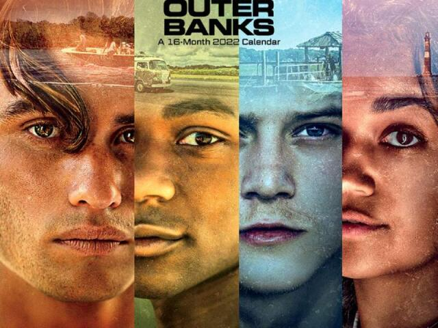

Outer Banks
A história se passa em uma cidade de Carolina do Norte, na ilha fictícia chamada Outer Banks, onde um grupo de adolescentes conhecidos como Pogues está vivendo normalmente suas aventuras e curtindo a juventude, até que se depara com um grande mistério a ser resolvido. John B convoca seus amigos para uma missão a fim de encontrar um possível tesouro perdido que pode estar ligado ao desaparecimento de seu pai. Ao longo dos episódios, a gangue passa por vários imprevistos e fica cada vez mais disposta a enfrentar todos os obstáculos para desvendar esse segredo.
